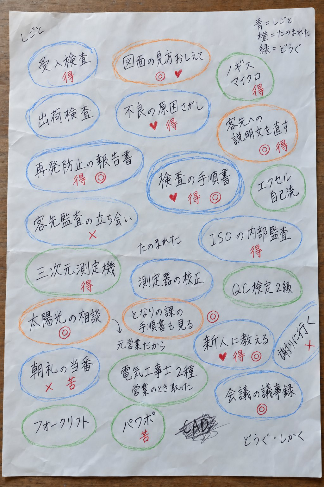
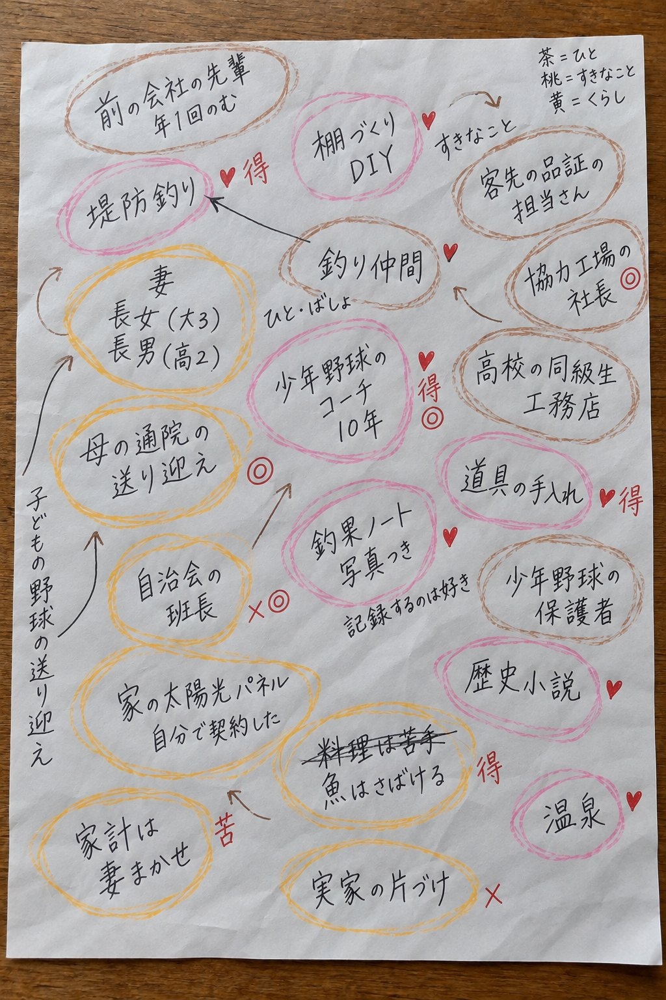
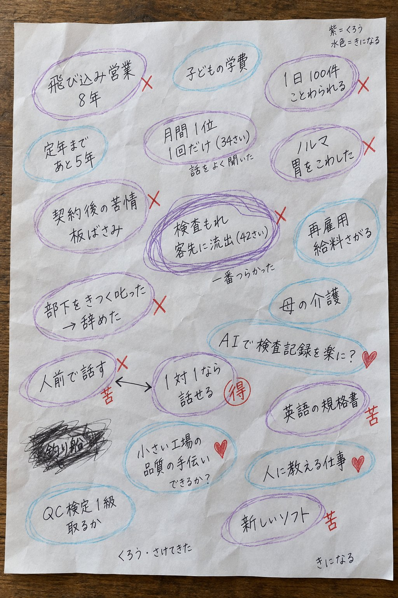
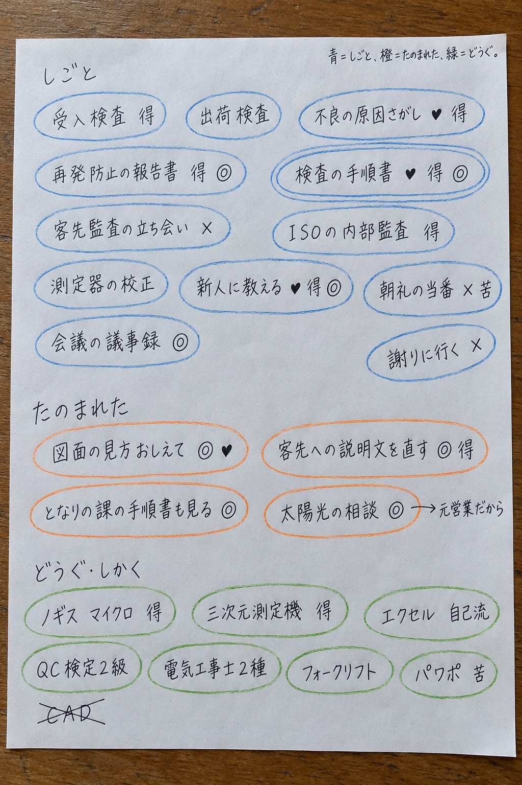

棚卸しと、強み・弱みの分析を、手順どおりに進めるための一冊
許可なく複製・転載・転記・配布・公開することを禁じます。
この一冊でやることは5つです。自分に関わる言葉を書き出す。色鉛筆で色を塗って分ける。AIに表へ整えてもらう。その表をこのページに入れて図にする。図を見て、事業の設計に使う。
1日で終える必要はありません。①と②で1回（30〜40分ほど）、④と⑤で1回、⑥で1回、の3回に分けるのが目安です。
棚卸しは、頭の中にあるものを外に出し、数えられる形にする作業です。文章で書こうとすると手が止まりやすいので、ここでは単語（キーワード）で出します。出した単語に色を塗ると、ばらばらだった言葉がまとまりになり、自分では気づいていなかった偏りや重なりが見えてきます。
図1 この一冊の流れ。③は、②で色を塗ると何が分かるかの説明です。
書くのは、自分に関わりのある言葉です。やってきた仕事、扱ってきた道具、関わった人、好きなこと、苦手なこと。文章にせず、単語か短い言葉で書きます。「検査の手順書」「新人に教える」「朝礼で話す」「表計算」「町内会の会計」のような粒です。
数は、まず50個を目安にします。30個を過ぎたあたりから、ふだん意識していない言葉が出てきます。そこからが棚卸しの中身です。
一つの言葉から、枝を伸ばします。「検査」と書いたら、「誰と」「何を使って」「どこで困った」「何を作った」と自分に尋ね、出た言葉を横に書きます。一つの言葉から3つ出すつもりで進めると、数がそろいます。
書き出した言葉は、そのままでは眺めても何も分かりません。同じ見方で、全部の言葉に色を付けると、分かれて見えてきます。見方は3つあり、1回に1つずつ、合わせて3回塗ります。
| 回 | 見方 | 塗り方 |
|---|---|---|
| 1回目 種類 | その言葉は、何の話か | 言葉を、種類ごとの色の丸で囲みます。 仕事 道具・技術 暮らし・地域 人・つながり 気がかり・これから 種類の分け方は、自分の紙に合わせて変えて構いません。4〜6種類が扱いやすい数です。 |
| 2回目 好き・嫌い | やっていて、気持ちはどうか | 好きな言葉の横に「♥」、嫌いな言葉の横に「×」。どちらでもない言葉には、何も付けません。 |
| 3回目 得意・苦手 | 人と比べて、うまくやれるか | 得意な言葉の横に「得」、苦手な言葉の横に「苦」。どちらでもなければ付けません。 |
| 仕上げ 頼まれた | 人から頼まれたことがあるか | 頼まれたこと・礼を言われたことがある言葉に「◎」。 |
品質管理の仕事をしている55歳の人（架空の人物）が、A4の紙3枚に書き出して色を塗った例です。行にそろえず、思い出した順に散らして書いています。画像を押すと大きく表示され、もう一度押すと閉じます。




図2-2 散らして書いても、並べて書いても構いません。丸の色と印が読み取れれば、あとの手順は同じです。
塗り終えた紙を、少し離して眺めます。見えてくるものは4つあります。
| 見えるもの | 紙の上でどう見えるか | 何の手がかりになるか |
|---|---|---|
| 偏り | ある色の丸が多い。ある色がほとんど無い | 自分の経験がどこに積もっているか。事業の土台になる場所 |
| 重なり | 「♥」と「得」と「◎」が、同じ言葉に付いている | 売り物の種。好きで、うまくやれて、人が頼んでくること |
| ずれ | 「得」なのに「×」、「♥」なのに「苦」 | 続けにくいこと、これから身につけたいこと |
| つながり | 種類は違うのに、一緒に出てくる言葉がある | 組み合わせると商品になる材料（例：「手順書」と「新人に教える」） |
図3 2回目と3回目の印を掛け合わせると、言葉が4つの場所に分かれます。
紙の上でも、ここまでは分かります。ただ、50個を超える言葉を目で数えたり、言葉どうしのつながりを追ったりするのは骨が折れます。そこから先を、AIとこのページの図に任せます。
AIには、紙の内容を決まった形の表に整えることと、言葉どうしのつながりの候補を挙げることを頼みます。色分け（種類・好き嫌い・得意苦手）は自分で決めたものを使い、AIには決めさせません。使うのは、ChatGPT・Claude・Gemini など、ふだんお使いの対話型のAIで構いません。
方法は2つあります。やりやすいほうを選びます。
検査の手順書, 仕事, 好き, 得意, 頼まれた ／ 朝礼で話す, 仕事, 嫌い, 苦手,読み取りが大きく違うとき：「まだ書き直さないでください。どの言葉が読みにくかったかだけ、一覧で教えてください。」と尋ね、その言葉だけ自分で打ち直します。写真が暗い・斜めのときは、明るい場所で真上から撮り直します。
次の文をコピーし、最後の【私の言葉】のところに、ステップ1の文字を貼って送ります。
表が途中で切れたとき：「まだ作り直さないでください。何行目まで出せたかを教えてください。」と尋ねてから、「続きを同じ形で出してください」と頼みます。
言葉が勝手に増えた・言い換えられたとき：「何も変えないでください。私が渡した言葉と、表のキーワードで違っているものだけを一覧にしてください。」
AIが仮に入れたカテゴリと、「関連」の列を見ます。自分の実感と違うものは、AIに直してもらうか、あとで自分で書き換えます。関連は、AIが言葉の意味から推し量ったものです。自分の経験の中で実際につながっていたものだけを残します。
AIの答えの表をコピーし、メモ帳などに貼って、「tanaoroshi.md」のように、名前の終わりを「.md」にして保存します。AIに「この表を、マークダウンのファイル（.md）で渡してください」と頼める場合は、それでも構いません。
ファイルにせず、表をそのまま貼り付けることもできます（次の章の貼り付け欄）。スマートフォンでは、こちらが早く済みます。
ステップ4のファイルを下の枠に入れるか、表を貼り付けると、8つの図になります。入れた内容は、このパソコン・スマートフォンの中で図にするだけで、外には送られず、保存もされません（ページを閉じると消えます）。
| 図 | 何が見えるか | 見るところ |
|---|---|---|
| グループ | 種類ごとに言葉をまとめたもの | どの種類に言葉が多いか。緑（好き）が集まる種類はどこか |
| マトリクス | 好き嫌い × 得意苦手の9つの枠 | 右上（好き × 得意）に何があるか。左上（嫌い × 得意）に入ったものは何か |
| マインドマップ | 自分を真ん中に、種類→言葉と枝を広げた図 | 枝の太いところ・細いところ。全体を一枚で眺める |
| 言葉のつながり | 関連のある言葉を線で結んだ図 | 線が多く集まる言葉。そこが自分の中心にある経験（右クリックしながらドラッグで図を動かせます） |
| 種類どうしの関係 | 種類と種類の間に、つながりが何本あるかの表 | 違う種類なのに数が多い組み合わせ。組み合わせて商品になる材料 |
| 対比 | 好きと嫌い、得意と苦手を左右に並べたもの | 左右の数の差。好きが多いのに得意が少ない種類はどこか |
| ベン図 | 「好き」「得意」「頼まれた」の3つの輪の重なり | 3つが重なる真ん中。売り物の種 |
| まとめ | 強み・弱みの下書き | 次の章で使う材料。文字として写し取れる |
図は、眺めて終わりにしません。次の3つに置き直します。
「まとめ」の図に出る下書きを、強み・弱みの候補として書き写します。この時点ではまだ候補です。好きで得意だと自分で感じていることと、実際にうまくいったことは、同じとは限りません。『自分の棚卸しガイド』2章のフィードバック分析（当時の期待と、実際の結果を比べる）で、一つずつ確かめます。
「好き × 得意」に入った言葉に共通するものを、AIに言葉にしてもらうこともできます。出てきた言い方が自分の実感と合うかどうかは、自分で決めます。
答えが褒め言葉ばかりのとき：「評価は書かないでください。表の言葉と、そこから言えることだけを書いてください。」
強み・弱みの候補が出たら、『自分の棚卸しガイド』の2章（フィードバック分析）で確かめ、3章・4章（SWOT・クロスSWOT）で世の中の動きと並べ、5章（誰に・何を・いくらで）で小さな計画にします。この別冊は、その手前の「材料を出して、分けて、見えるようにする」ところを受け持っています。
見本に出てくるAさんは、説明のために作った架空の人物で、実在の人物・事業者とは関係がない。
図は、入れた表をそのまま数えて並べたもので、強み・弱みを判定するものではない。「関連」の線は、表の「関連」の列に書かれた言葉どうしを結んでいる。
第1版
許可なく複製・転載・転記・配布・公開することを禁じます。
制作：上村コーチ ／ © 2026 Kei UEMURA